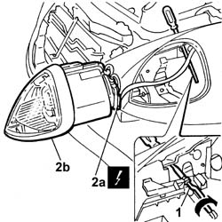

5540B10 HEADLAMP (one, left or right - R.R.
- Path
- Procedures > 55 ELECTRICAL EQUIPMENT > 5540 EXTERIOR LIGHTING > 5540B HEADLAMPS > 5540B10 HEADLAMP (one, left or right - R.R.
- Kind
- repair procedure (removal / refitting; the operation number is the code)
- Applies to
- all engines; all production periods
- Interactive page
- https://sloeber94.github.io/elrnDB-lThss/en/#/148507
Applies to: all engines; all production periods
 Removing
Removing
 Refitting
Refitting- Disconnect the negative battery terminal.
1. Turn the headlamp locking device in the direction shown by the arrow.
2. Disconnect the electrical connector (2a) and remove the headlamp (2b) from the housing.
 | Description | Connector |
|---|---|---|
2a | Left headlamp | F010 |
| Description | Connector |
|---|---|---|
2a | Right headlamp | F011 |

Applies to: all engines; all production periods
Refitting
Removing1. Connect the electrical connector (1a) and fit the headlamp (2b) in the housing.
| Description | Connector |
|---|---|---|
1a | Left headlamp | F010 |
| Description | Connector |
|---|---|---|
1a | Right headlamp | F011 |
2. Turn the headlamp locking device in the direction shown by the arrow.
Applies to: all engines; all production periods
- Connect the negative battery terminal.